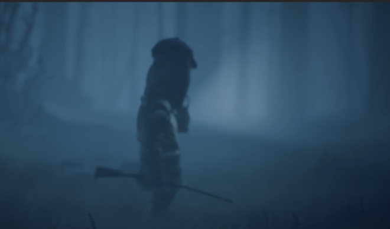
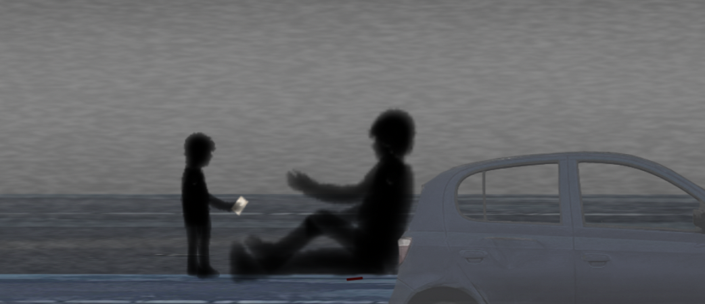
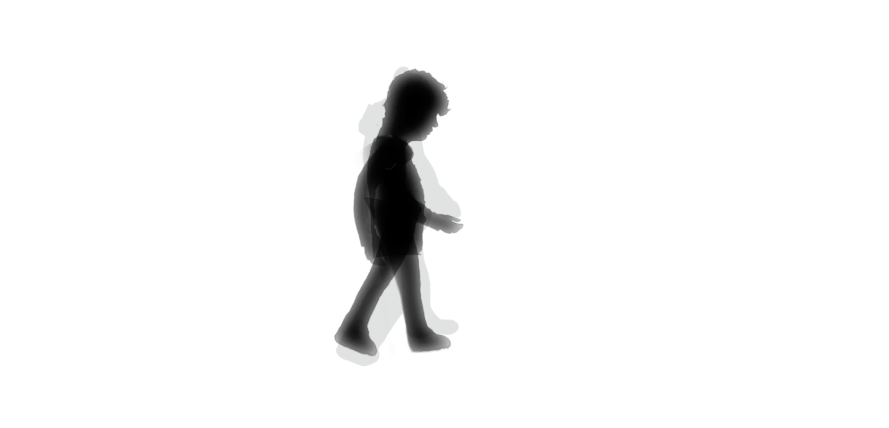
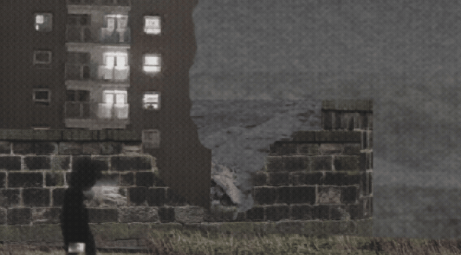

Narrative building
The anti-war tone and symbolism was informed through the research of poetry and anti-war media. The concept of universal symbolism came to fruition.
Project Breakdown
Project Summary
I created a antiwar animation following a child through the war-torn post conflict landscape. The piece uses environmental storytelling to communicate loss and ambiguity delivering exposition through visual symbolism.
Implications
I photographed textures and imagery which I edited and composed to build my scenes. I comprised my sets in several layers which I animated in 2.5d to build depth within my scenes. I had universal adjustment layers which applied colour grading and fog unifying the visual identity. The characters in the piece were created through photography edited and animated with a puppet rig incorporated in the scene to maintain scale.

Development
This project was divided into the stages of research, modelling, texturing and lighting, and animation.
Supporting Documentation

The anti-war tone and symbolism was informed through the research of poetry and anti-war media. The concept of universal symbolism came to fruition.

The models for the characters were built and animated over reference footage

All environments were created in a large photoshop composition where they were layered foreground middle and background
All elements were combined into 2.5D depth-based scenes with atmospheric elements a camera glided through the scenes.